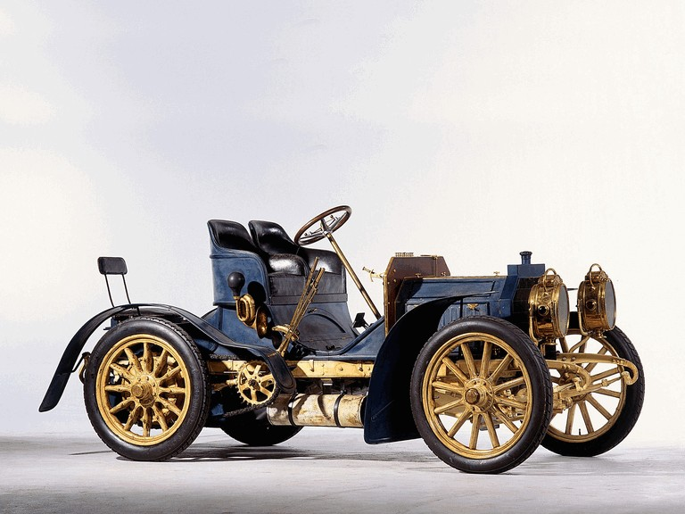
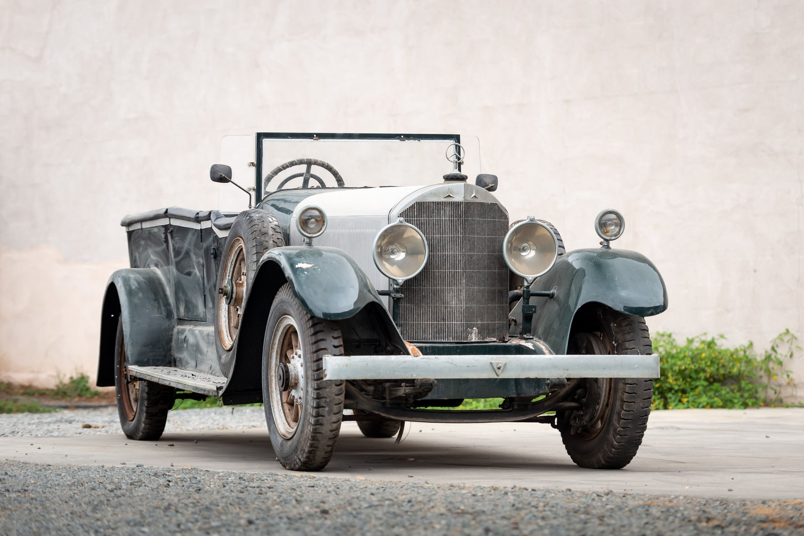
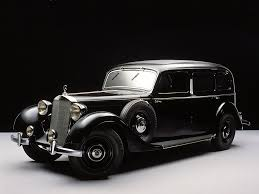
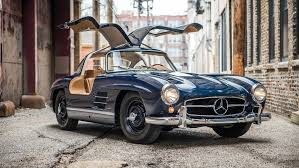
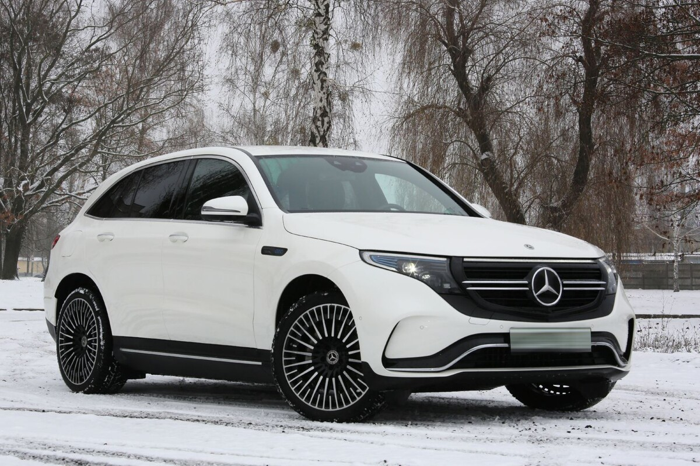

Our History
1886
The birth of the automobile: Karl Benz patents the first gasoline-powered car, the Benz Patent-Motorwagen.

1901
The first Mercedes car is introduced by Daimler-Motoren-Gesellschaft, named after Mercedes Jellinek, the daughter of an important customer.
1926
Daimler-Motoren-Gesellschaft and Benz & Cie merge to form Daimler-Benz AG, marking the official birth of the Mercedes-Benz brand.
1936
Introduction of the Mercedes-Benz 260D, the world's first diesel-powered passenger car.
1954
The iconic 300 SL "Gullwing" is introduced, featuring distinctive upward-opening doors and cutting-edge technology.
1980
Mercedes-Benz introduces the G-Class, a rugged off-road vehicle that becomes a symbol of luxury and durability.

1997
The Mercedes-Benz A-Class is launched, marking the brand's entry into the compact car segment.

2020
Mercedes-Benz launches the EQC, its first fully electric SUV, signaling a new era of sustainable mobility.
